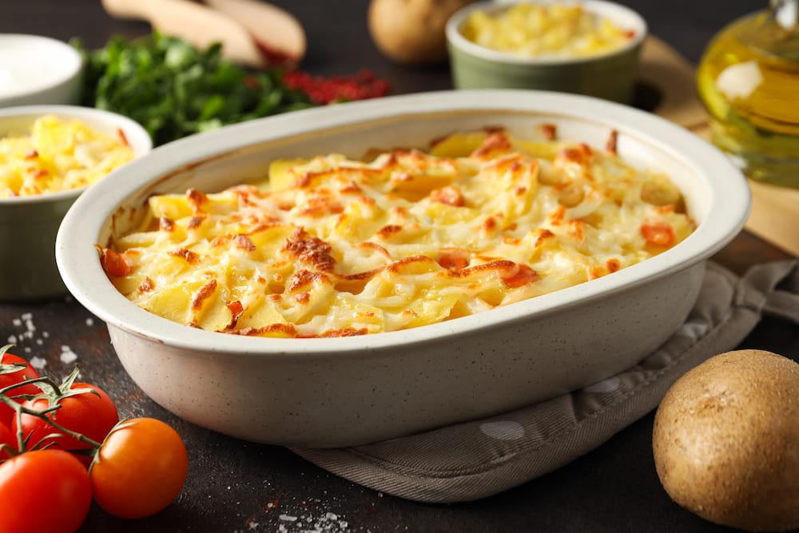

Tartiflette

Ingredientes
- 1 kg de papas
- 1 queso reblochon o brie entero (unos 450-500g)
- 200g de panceta ahumada o bacon en tiras
- 2 cebollas grandes
- 1 diente de ajo
- 150ml de vino blanco seco
- 200ml de nata líquida para cocinar (crema de leche)
- Nuez moscada (opcional)
- Aceite de oliva
- 1 cdta. de mantequilla
- Pimienta negra a gusto
- Sal a gusto
- Preparar las patatas: Lavar bien las patatas y ponerlas a cocer con piel en abundante agua con sal. Cocinar durante unos 20-25 minutos, hasta que estén tiernas pero sin deshacerse. Escurrir, dejar que se templen un poco, pelarlas y cortarlas en rodajas de aproximadamente 1 cm de grosor.
- Preparar el sofrito: Mientras se cocinan las patatas, pelar y cortar las cebollas en tiras finas (juliana). En una sartén grande, calentar un poco de aceite o mantequilla y pochar la cebolla a fuego medio-bajo hasta que esté transparente y blandita (unos 10-15 minutos).
- Añadir la panceta: Subir el fuego, añadir la panceta a la sartén y cocinar hasta que esté dorada y crujiente.
- El toque del vino: Verter el vino blanco en la sartén para desglasar, raspando el fondo con una cuchara de madera para levantar todos los jugos. Dejar que el alcohol se evapore durante un par de minutos.
- Montar la tartiflette: Precalentar el horno a 200°C. Frotar una fuente apta para horno con el diente de ajo partido por la mitad y engrasar con un poco de mantequilla para evitar que se pegue la patata.
- Crear las capas: Colocar una capa de rodajas de patata en el fondo de la fuente. Salpimentar y añadir un toque de nuez moscada si se desea. Cubrir con la mitad de la mezcla de cebolla y panceta. Repetir con otra capa de patatas y el resto del sofrito.
- Añadir la nata: Verter la nata líquida por toda la superficie, asegurándose de que se distribuya bien entre las capas.
- El gran final con el queso: Cortar el queso Reblochon o brie en tiras y disponerlas arriba de las patatas.
- Hornear: Llevar al horno durante unos 20-25 minutos, o hasta que el queso esté completamente derretido, dorado y burbujeante.
- Servir: Dejar reposar un par de minutos fuera del horno y servir la tartiflette bien caliente, directamente de la fuente.